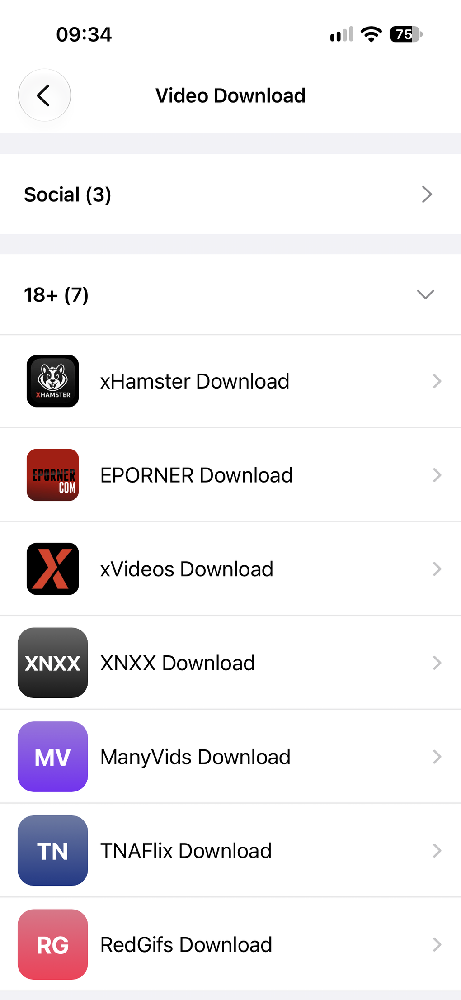
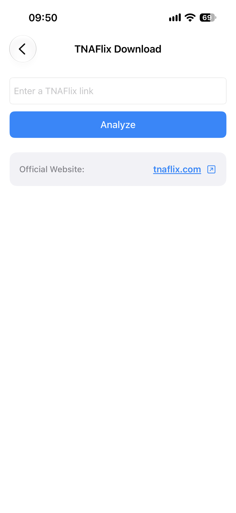

TNAFlix の動画をダウンロードする方法
TNAFlix の動画は保存ボタンのない Web プレイヤーで再生されるため、ポップアップだらけの変換サイトか、プレイヤーの操作ボタンまで写り込む画面収録に頼りがちです。ImageGet はそのどちらも使いません。動画リンクを貼り、アプリにページを解析させ、バージョンを選べば写真ライブラリに保存されます。手順は次のとおりです。
ImageGet を無料でダウンロード — TNAFlix の動画をワンタップで保存。
ImageGetをダウンロードステップ 1：ImageGet を開き、Video Download をタップ
ImageGet を開きます。メイン画面で Video Download をタップしてください。アプリ内の動画ツールがまとまったセクションです。

ステップ 2：18+ を開き、TNAFlix Download を選ぶ
動画ツールはカテゴリごとに分かれています。まず 18+ を開き、TNAFlix Download をタップします。ImageGet は TNAFlix モードに切り替わり、動画リンクを待ちます。

ステップ 3：動画のリンクをコピーする
ブラウザで TNAFlix を開き、保存したい動画を探します。アドレスバーから URL をコピーしてください。動画 1 本のページで、ホームやカテゴリ一覧ではありません。その動画が開くものであれば、短い共有リンクでもかまいません。
ステップ 4：ImageGet に貼り付けて Analyze をタップ
リンクを入力欄に貼り、Analyze をタップします。ImageGet はページを読み取り、サムネイルではなく動画ファイルそのものを取り出します。TNAFlix の画面の下部には tnaflix.com へのショートカットもあるので、ImageGet のブラウザでサイトを開いてリンクをコピーできます。

ステップ 5：バージョンを選んでダウンロード
ImageGet はページが実際に配信しているもの——多くの場合複数の解像度——を一覧表示します。希望のものをタップし、Download をタップします。動画は写真ライブラリに保存され、プレイヤーの操作ボタンも TNAFlix を開き直す必要もなく、オフラインで再生できます。
TNAFlix の動画をダウンロードするコツ
- 無料ダウンロード — 無料プランには動画ダウンロードが 3 回含まれます。Premium なら回数制限も広告もなくなります。
- プレミアム作品はロックされたまま — TNAFlix は無料動画と有料動画が混在しています。ImageGet はページが公開しているものを保存するだけなので、サブスクリプションやログインが必要な作品はダウンロードできません。
- 解像度を下げると容量を節約 — iPhone の空きが少ないなら小さいバージョンを選びましょう。スマートフォンの画面では、その差は十分許容できます。
- 保存する権利のあるものだけを — ダウンロード前に TNAFlix の規約を確認し、保存したものは非公開にしてください。
よくある質問
TNAFlix の動画は無料でダウンロードできますか？
はい。無料プランに動画ダウンロード 3 回が含まれます。Premium ならダウンロード無制限、広告なしで使えます。
プレミアム作品や会員限定の動画でも使えますか？
ページが実際に配信しているものを保存します。サインインせずに再生できる動画はダウンロードできます。サブスクリプションやアカウントが必要な作品は TNAFlix 側でロックされたままで、ImageGet が解除することはありません。
動画の画質は選べますか？
ページが複数のバージョンを提供していれば、ImageGet がすべて一覧表示するので、保存前に解像度を選べます。